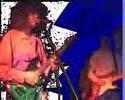
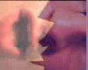
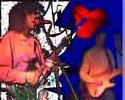
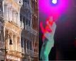
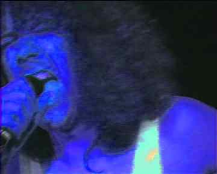
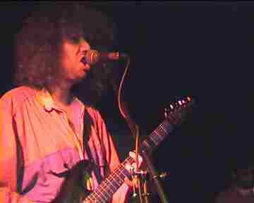
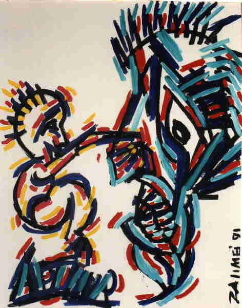

Hill De Mounta Vista
Flora Theater Delft
Live Video Download
Video: Flora Theater in Delft: HillDeMountaVista
Video Live/War
Now and Then.



Video: French Bulldog: Hooga Hooga Hooga
Live Pool and Blow Cafe in Scheveningen
With Tack Crash.

Video: Punk Sit Com Trailer
Trailer/Intro Sitcom/Punkcom
|  |  |
 |  |
|  | 
|
